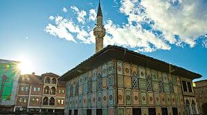
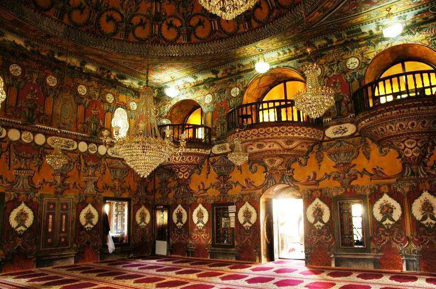

Xhamia e Larme (maqedonisht: Шарена Џамија, turqisht: Alaca Camii), e njohur edhe si Xhamia e Pashës, është një xhami në Tetovë, e ndërtuar për të parën herë në vitin 1495 dhe e rindërtuar më vonë në vitin 1833 nga Abdurrahman Pasha.[1] Rreth saj gjenden edhe objektet e tjera të arkitekturës fetare islame dhe civile, të rëndësishme për vlerat estetiko-artistike dhe për vulën historike që mbajnë. Xhamia është ndërtuar më 1495 kurse e rindërtuar nga themeli dhe e zgjeruar më 1833 nga ana e Abdurrahman Pashës, biri i Rexhep Pashës, që janë mbrojtësit e Tetovës, të cilët kanë qenë edhe dashamirë të mëdhenj të artit. Të gjitha këto të dhëna i kuptojmë nga mbishkrimi i ruajtur mbi hyrjen në xhami si dhe nga nishani i varrit i cili ruhet në tylben ndërtuar në oborin e xhamisë. Këta pashallarë të njohur që kanë vepruar në Tetovë në gjysmën e parë të shekullit XIX e kanë ndërtuar dhe rindërtuar kalanë e qytetit dhe Arabati Baba teqen. Në tylben tetëanësore janë varrosur zonjat Hurshide dhe Mensure. E para ka vdekur më 1534. Për to supozohet se kanë qenë donatorë të xhamisë së mëparshme nga shekulli XV. Në afërsi të xhamisë gjendet edhe shadërvani, i cili ka pasur funksion të dyfishtë: për të marrë abdest para namazit dhe si zeshme për nevojat e popullatës së Tetovës.
 